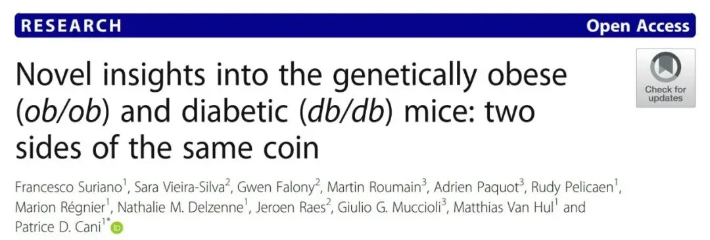
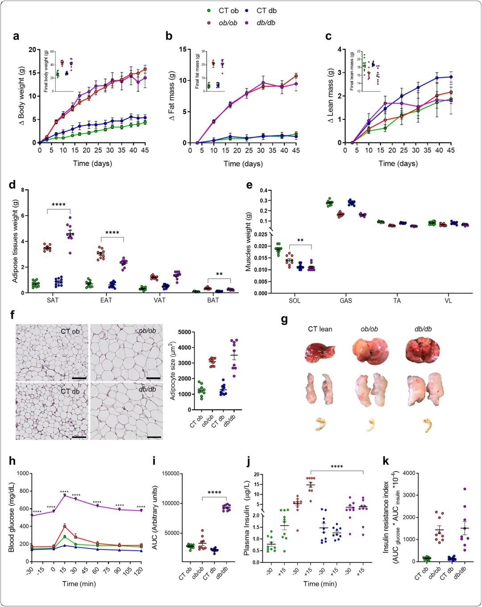
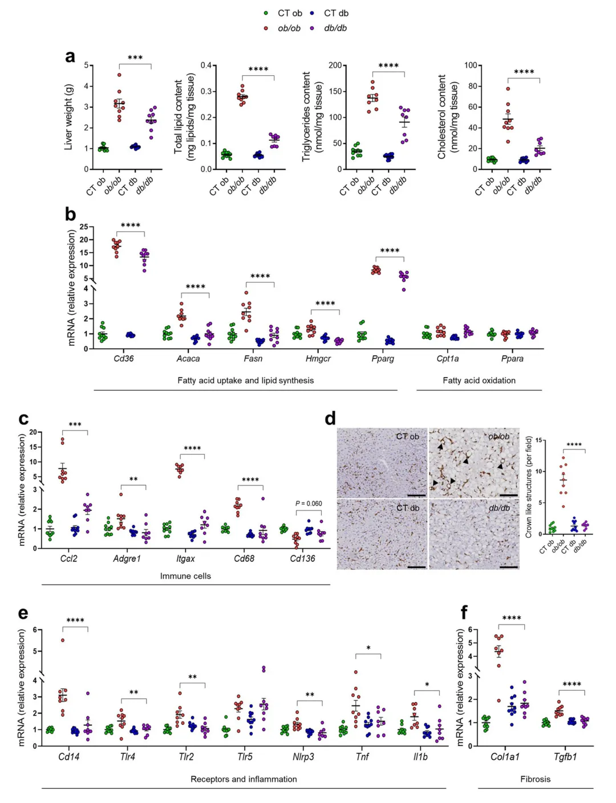
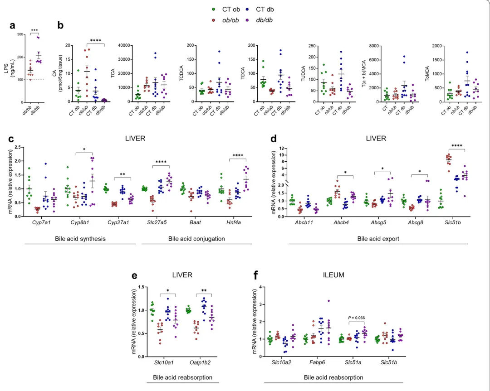
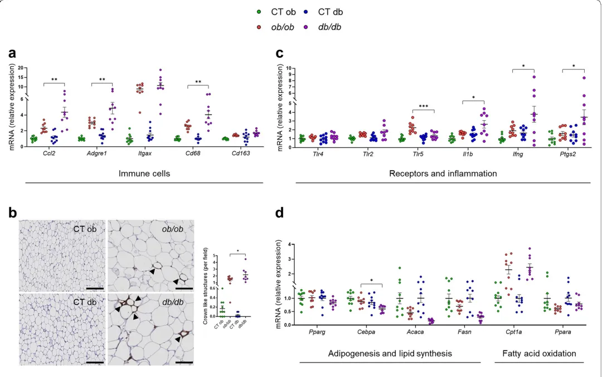
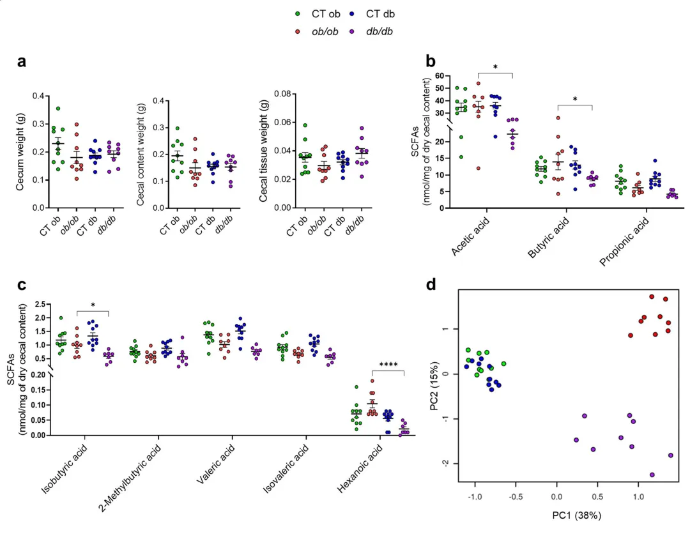
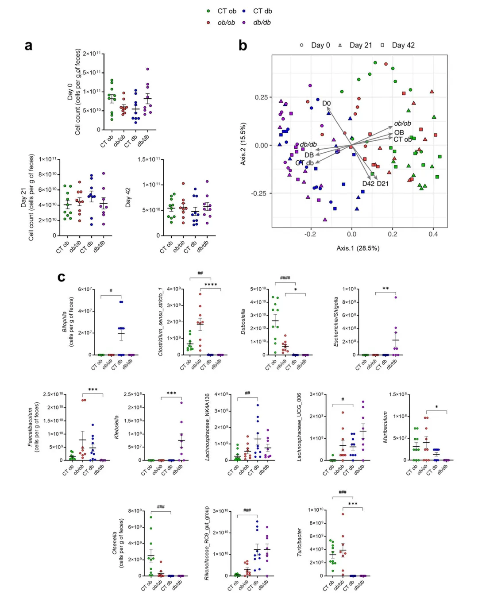
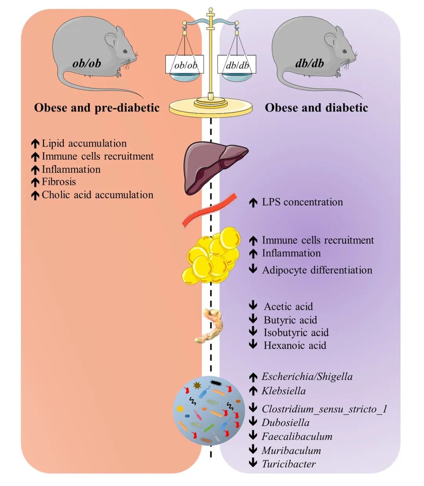

一个基因会引起多大的改变？
原文：https://mp.weixin.qq.com/s?__biz=MzAwMzIzOTk5OQ==&mid=2247507901&idx=1&sn=6f3490a42676ad4e12fdee46a0714151&chksm=9b3ca6edac4b2ffb00cdce34310c4960ca164ead79a253bc343c5c1777523fe0dff948f9f794#rd 合集：文献速递
一、写在前面
在科研领域，我们经常被各种热门话题和研究趋势所吸引。然而，我今天要推荐的这篇文章，选择了在已知的研究道路上寻找新的起点。这篇文章深入研究了肥胖小鼠（ob/ob）和糖尿病小鼠（db/db）之间在遗传学层面的差异 。作者们试图通过比较这两种小鼠在炎症标记物、细菌成分、胆酸、短链脂肪酸以及肠道微生物 等方面的差异，来解释肥胖症和糖尿病的不同表现。这篇文章以全新的视角 来理解肥胖症和糖尿病的发病机制，为我们带来了新的思考和启示。

doi:
DOI: 10.1186/s40168-021-01097-8
链接：
https://pubmed.ncbi.nlm.nih.gov/34183063/
摘要
背景
瘦素缺失的ob/ob 小鼠和瘦素受体缺失的db/db 小鼠是常用的模拟肥胖和2型糖尿病的小鼠模型。然而，尽管ob/ob 和db/db 小鼠体重增加并发展为严重肥胖，db/db 小鼠比ob/ob 小鼠更容易患上糖尿病。至今我们仍不清楚为什么针对同一途径——瘦素信号传导，会导致两种不同的表型发展。鉴于肠道微生物通过各种代谢物（如短链脂肪酸 ）与宿主相互作用和通信，并参与胆汁酸 的代谢调控，我们研究了炎症标志物、细菌组分、胆汁酸 、短链脂肪酸 以及肠道微生物等，看是否能够解释ob/ob 和db/db 小鼠中肥胖和或糖尿病状态出现的特定表型差异。
结果
作者对6周大的ob/ob 和db/db 小鼠进行了7周的跟踪，它们的体重、脂肪量和瘦体质量增加都相当，这表明它们处于严重肥胖的状态。但如预期所示，ob/ob 小鼠和db/db 小鼠的糖代谢和血糖诱导的胰岛素分泌显著不同。同时两者的脂肪分布也有差异，db/db 小鼠有更多的皮下脂肪，而ob/ob 小鼠的阴囊脂肪更多。此外，ob/ob 小鼠的肝脂肪变性比db/db 小鼠更严重。作者还发现ob/ob 小鼠和ob/ob 小鼠之间的炎症反应的部位也不一样，ob/ob 小鼠的肝脏炎症 反应更明显，而db/db 小鼠的（皮下）脂肪组织炎症 反应更强。在分析肠道微生物群 落组成时，作者发现19个微生物类群的数量在某种程度上受到基因型的影响。此外，还发现血清LPS浓度、肝胆汁酸 含量以及盲肠短链脂肪酸 谱因基因型的不同而不同。
结论
在两种不同的瘦素信号通路基因模型中，作者阐明了可能发展为肥胖或糖尿病状态的潜在机制。并认为，这些差异可能与特定程度的炎症反应、血清LPS浓度、胆汁酸 代谢、短链脂肪酸 谱以及肠道微生物群 落组成有关。
关键词：
瘦素缺乏 、瘦素受体缺乏 、ob/ob 、db/db 、脂多糖 、胆汁酸 、肝脏炎症 、脂肪组织炎症 、短链脂肪酸 、小鼠肠道微生物群 、微生物群定量分析
研究背景
经过40多年的发展，肥胖症已经成为一种全球流行病，给公共卫生和经济学带来了重大困扰。该病是多种与代谢相关的疾病的主要致病因素，包括胰岛素抵抗、2型糖尿病以及肝病。肥胖症的特征是能量摄入和能量消耗之间的失衡，尽管其在个体中的患病率因行为、遗传、环境和生理因素而异。普遍的观点是，肥胖症与慢性轻度炎症状态有关，其特征是产生几种炎性细胞因子和脂肪因子。在过去的二十年里，肠道微生物群 已经成为调节全身代谢的基本环境因素，它影响着能量平衡、葡萄糖代谢、肠道屏障功能以及轻度炎症等。许多代谢功能可以追溯到微生物代谢产物，其中短链脂肪酸 （SCFAs）研究的最多，其与多种代谢功能相关联。此外，肠道微生物群 已被证明可以调节胆汁酸 （BA）的特征，主要是通过将初级胆汁酸 转化为次级胆汁酸 ，从而增加了它们的化学多样性。这些分子也因调节多种宿主代谢过程而为人所知。
肥胖是涉及多个器官和系统的危险因素。这其中肝脏和脂肪组织起着核心作用。与肝脏的代谢功能相反，脂肪组织具有以脂质形式储存和释放能量的能力，并具备内分泌器官的能力，能够合成多种生物活性化合物（即， 脂肪因子）进而参与多种代谢途径的调节。最具代表的因子是瘦素，它主要由成熟的脂肪细胞分泌。除了在饱腹感方面的作用外，瘦素还在调节能量稳态、脂质和糖代谢以及在同源瘦素受体 (ObR) 的免疫反应中发挥着重要作用 。瘦素信号传导的改变与肥胖和二型糖尿病等代谢疾病密切相关。因此，遗传性瘦素缺乏 的ob/ob 小鼠和瘦素抵抗的db/db 小鼠被广泛用作研究肥胖和代谢紊乱相关的动物疾病模型中。ob/ob 小鼠的特征是编码瘦素的肥胖 (ob) 基因发生突变，而 db/db 小鼠则具有编码 ObR 的糖尿病 (db) 基因突变 。两种小鼠模型都存在瘦素信号传导缺陷，ob/ob 小鼠中完全缺乏瘦素产生，而 db/db 小鼠的血液循环瘦素过度表达，但由于瘦素长型受体（ObRb）完全缺乏，机体无法对其做出反应。尽管瘦素缺乏 （配体与受体）的基础分子机制不同，但这两种模型除了在糖代谢方面有所不同，在食欲亢进、代谢低下和肥胖方面都表现出相似的表型。事实上，ob/ob 小鼠会出现肥胖和轻度胰岛素抵抗，而 db/db 小鼠会出现肥胖和糖尿病。这些差异尚未完全被理解，因为瘦素信号传导与肥胖和糖尿病状态的发展相关的许多机制细节仍然缺乏研究。最近使用这两种遗传模型的研究已经确定了肥胖和二型糖尿病的新标志物 ，以及不同年龄段的不同肠道微生物群 组成，这些组成与血糖波动密切相关 。然而，识别新的调控因子以及更好地理解与瘦素信号传导相关的不同代谢途径，可能会有助于开发新的潜在治疗策略来治疗肥胖症及其相关的代谢疾病。本研究的目标是解释为什么尽管具有相同的脂肪量和相似的体重，但在年龄和性别相匹配且喂养相同饮食 7 周的 ob/ob 和 db/db 小鼠中观察到的代谢并发症的发生情况不同。为了探索这其中的缘由，作者对炎症标志物、细菌成分、胆汁酸 （BA）、短链脂肪酸 （SCFA） 和肠道微生物进行了深入研究。
主要结果
ob/ob 与 db/db 小鼠的不同表型特征
实验进行7周后，食用常规饮食的 ob/ob 和 db/db 小鼠们逐渐增加了相似质量的体重。这间接证实了瘦素信号传导受损的致肥作用（图1a）。使用核磁共振（NMR）进行的身体成分分析显示，两种小鼠的脂肪质量都有相似的增加（图1b），而且瘦体质量较低（图1c）。有趣的是，尽管两种小鼠的总脂肪质量增加相似，但在实验结束时，作者发现 ob/ob 和 db/db 小鼠的全身脂肪质量分布不尽相同。附睾脂肪组织（EAT）和棕色脂肪组织（BAT）在 ob/ob 小鼠中的质量增加明显（分别为23.7%和24.7%）（图1d）。而 db/db 小鼠的皮下脂肪组织（SAT）比 ob/ob 小鼠重22.9%（图1d）。两者在内脏脂肪组织（VAT）的质量对比中差异不明显（图1d）。在不同类型的肌肉中，与 ob/ob 小鼠相比，唯一在 db/db 小鼠中显著减少的是比目鱼肌（SOL）质量，约减少20.6%（图1e）。脂肪质量的增加与两种突变小鼠中脂肪细胞的增大相关（图1f）。作者还发现，不同组织（即肝脏、脂肪组织和盲肠）的形态如：大小、形状和颜色等，在对照组瘦体小鼠中均相似，而在 ob/ob 和 db/db 小鼠之间则有不同（图1g）。尽管他们的体重和脂肪质量增加相等，但 db/db 小鼠在实验期间的食物和水摄取更多（附件2：图S1a-b）。同时发现 db/db 小鼠的体温明显较低（−1.2°C），这表明它们的能量代谢不同（附加文件2：图S1c）。相反，对能量排泄（即24小时内分泌的粪便量乘以弹量热仪测量的粪便能量含量）的计算显示，db/db 小鼠的能量摄取较 ob/ob 小鼠低（附件2：图S1d-f）。

图1 在ob/ob 和db/db 小鼠之间不同的表型特征。
【(a) 体重的Δ（从第0天开始）和最终体重（g）。(b) 脂肪质量的Δ（从第3天开始）和通过时域核磁共振（TD-NMR）测量的最终脂肪质量（g）。(c) 瘦体质量的Δ（从第3天开始）和通过时域核磁共振（TD-NMR）测量的最终瘦体质量（g）。(d) 脂肪组织（SAT：皮下；EAT：附睾；VAT：内脏；BAT：棕色）重量（g）。(e) 肌肉（SOL：比目鱼肌；GAS：腓肠肌；TA：胫骨；VL：股外侧）重量（g）。（f）皮下脂肪组织（SAT）中脂肪细胞的大小。标尺，100μm；放大倍数，20倍。(g) 肝脏、SAT和盲肠的形态。(h) 在自由活动的小鼠中，口服1g/kg葡萄糖后的血糖（mg/dL）曲线和（i）在载葡萄糖后0至120分钟内测量的平均曲线下面积（AUC）。（j）在载葡萄糖前30分钟和后15分钟测量的血浆胰岛素（μg/L）。（k）通过将血糖的AUC乘以胰岛素的AUC来确定胰岛素抵抗指数。绿色：CT ob瘦小鼠，红色：ob/ob 小鼠，蓝色：CT db瘦小鼠，紫色：db/db 小鼠。数据以平均值±标准误差呈现，**P < 0.01，P < 0.0001 (n = 8–10)。使用双向方差分析分析数据，然后对 (a–c) 和 (h) 进行 Tukey 事后检验，并根据单向方差分析，然后对 (d–f) 和 (i–k) 进行 Tukey 事后检验。】
ob/ob 和 db/db 小鼠之间不同的葡萄糖和胰岛素特征
ob/ob 小鼠和 db/db 小鼠之间的血糖变化曲线以及葡萄糖诱导的胰岛素分泌有显著的差异。在基础水平和口服葡萄糖负荷后，禁食的db/db 小鼠表现出更明显的糖耐量受损，如曲线下面积（AUC）增加64.5%所示（图1h, i），这种情况在口服葡萄糖耐量试验（OGTT）的整个过程中都存在，并且与禁食的ob/ob 小鼠相比，血浆胰岛素水平降低了73.9%（图1j）。与 db/db 小鼠的胰岛素分泌受损相反，ob/ob 小鼠在口服葡萄糖后产生的胰岛素明显更多，这表明存在胰岛素抵抗状态（图1j）。总体而言，两种模型产生的胰岛素抵抗程度相似，胰岛素抵抗指数的计算证明了这一点（图1k）。
ob/ob 和 db/db 小鼠之间不同的肝脏脂肪与炎症情况
作者发现，与 db/db 小鼠相比，ob/ob 小鼠的肝脏重量增加了25.1%（图2a），并且表现出更严重的肝脏脂肪变性。肝脏总脂质含量增加了59.8%，说明肝脏存在脂质积累，这主要是由于肝脏甘油三酯和胆固醇水平的明显增加（分别为33.8%和57.9%）（图2a）。为了了解肝脂肪变性的潜在进展机制，作者分析了大量参与脂质代谢的基因（图2b）。在 ob/ob 小鼠中观察到与脂肪酸摄取和储存相关的标志物（即由 Cd36 编码的分化簇 36）的 mRNA 表达显著升高。与较高的脂质和胆固醇积累表征一致，ob/ob 小鼠出现了脂质合成标志物（即由 Acaca 编码的乙酰辅酶 A 羧化酶 α；由 Fasn 编码的脂肪酸合酶；3-羟基-3-甲基戊二酰辅酶 A 还原酶）的高表达。与 db/db 小鼠相比，这强烈表明两个突变组之间存在不同的肝脏脂质代谢。两个与脂肪酸氧化相关的关键基因（即，由Cpt1a编码的肉碱棕榈酰转移酶1A；以及由Ppara编码的过氧化物酶体增殖物激活受体α）的mRNA表达在 ob/ob 和 db/db 鼠中均未显著改变，这表明脂肪酸氧化路径没有发生变化（图2b）。为了进一步研究肝脏脂质脂肪变性是否也与肝脏炎症 相关，作者测量了与各种类型免疫细胞群的募集/浸润相关的几种标志物的mRNA表达（即C-C基序趋化因子配体2，由Ccl2编码；粘附G -蛋白偶联受体E1，由Adgre1编码；整联蛋白亚基αX，由Itgax编码；分化簇68，由Cd68编码；以及分化簇163，由Cd163编码）。在 ob/ob 小鼠中，作者观察到Ccl2（一种调节单核细胞/巨噬细胞迁移和浸润的趋化因子）、Adgre1（反映成熟巨噬细胞总数的标记）、Itgax（树突状细胞的标记）和Cd68（单核细胞/巨噬细胞的标记）的mRNA表达显著上调，而与抗炎性单核细胞/巨噬细胞相关的Cd163表达在ob/ob 小鼠中降低，但并不显著（P=0.060）（图2c）。接下来，通过对肝组织切片进行 F4/80 免疫染色并对冠状结构进（CLS，即死亡或垂死的肝细胞周围具有大脂滴的巨噬细胞）行计数（图 2d），作者发现，与 db/db 小鼠相比， ob/ob 小鼠肝脏中巨噬细胞浸润增加了 84.1%。与较高的免疫细胞招募表征一致，参与识别革兰阴性细菌病原体相关分子模式的关键受体的mRNA存在表达（例如，簇分化14，由Cd14编码；Toll样受体4，由Tlr4编码；Toll样受体2，由Tlr2编码；含有NLR家族pyrin结构域3，由Nlrp3编码）与 db/db 小鼠相比，ob/ob 小鼠中的促炎细胞因子（即肿瘤坏死因子 α，由 Tnf 编码；白细胞介素 1β，由 Il1b 编码）显着上调（图 2e），而Toll样受体5（由Tlr5编码）的mRNA表达没有观察到变化（图2e）。这些结果表明，ob/ob 小鼠中严重的肝脏炎症 与免疫细胞的大量募集有关。鉴于慢性肝脏炎症 会导致肝纤维化，作者还研究了纤维化相关基因（即由 Col1a1 编码的 I 型胶原蛋白 α 1 链；以及由 Tgfb1 编码的转化生长因子 β）的表达。与 db/db 小鼠相比，ob/ob 小鼠中这两个基因的表达均显着增加（图 2f）。总而言之，这些结果凸显了 ob/ob 和 db/db 小鼠之间在脂肪变性、炎症和纤维化方面的不同肝组织特征。

图2 ob/ob 和db/db 小鼠的不同肝脏特征。
【(a)解剖后获得的肝脏重量(g)；总脂质含量（毫克脂质/毫克组织）；肝脏甘油三酯（纳摩尔/毫克组织）；使用分光光度计测量肝脏胆固醇（nmol/mg组织）。（b）通过RT-qPCR测量肝脏脂质代谢标记物的mRNA表达。（c）通过RT-qPCR测量肝脏免疫细胞标记物的mRNA表达。（d）肝脏中F4/80染色的图片。比例尺，100微米；放大倍数×20。箭头指向冠状结构。（e）通过RT-qPCR测量肝受体和炎性细胞因子标记物的mRNA表达。（f）通过RT-qPCR测量肝纤维化标记物的mRNA表达。绿色：CT ob瘦小鼠，红色：ob/ob 小鼠，蓝色CT db瘦小鼠，紫色：db/db 小鼠。数据以平均值±标准差表示， P <0.05，*P<0.01，***P<0.001，P<0.0001（n=7-10）。对于mRNA表达，相对单位是相对于CT ob小鼠的平均值设置为1进行计算。数据通过一元方差分析（ANOVA）进行分析，随后进行Tukey事后检验。】
ob/ob 和 db/db 小鼠胆汁酸 代谢和胆汁酸 谱的差异
肝脏炎症 可以被多种刺激因素触发。肠源性内毒素，如脂多糖 （LPS，革兰阴性细菌外膜的组分），可以通过门静脉循环进入肝脏，并通过其受体TLR4促进大量促炎介质的释放。此外，胆汁淤积，即由于肝细胞分泌受损或胆管阻塞导致胆汁流量减少，可能导致肝内胆酸积聚，从而促进炎症发生。因此，作者测量了ob/ob 和db/db 小鼠及其相应瘦小鼠的血清LPS浓度和肝脏中胆汁酸 的含量。令人惊讶的是，作者发现与ob/ob 小鼠相比，db/db 小鼠的血清LPS浓度显著增加了32.5％（图3a）。与之前的假设一致，ob/ob 小鼠肝脏中的主要一级游离胆汁酸 CA的含量显著增加了94.5％。相反，在ob/ob 和db/db 小鼠的肝脏中，牛磺胆酸（TCA）、牛磺脉甾醇胆酸（TCDCA）、牛磺去氧胆酸（TDCA）、牛磺顺氧胆酸（TUDCA）、牛磺α-β杂环胆酸（T(a+b) MCA）和牛磺Ω杂环胆酸（ToMCA）的含量没有显著变化（图3b）。鉴于胆汁酸 （BA）的组合受到多种机制的调节，作者检测了与BA代谢（即合成、转运和池大小）相关的大量标记物。在ob/ob 小鼠中，参与经典（中性）和替代（酸性）胆汁酸 合成以及CA产生的标记物的mRNA表达显著下调（即由Cyp8b1编码的细胞色素P450家族8亚家族B成员1和由Cyp27a1编码的细胞色素P450家族27亚家族A成员1）（图3c），而限速酶Cyp7a1编码的胆汁酸 合成的mRNA表达在ob/ob 小鼠中呈下降趋势（图3c）。在胆汁酸 合成后，小鼠的主要胆汁酸 通过胆汁酸 辅酶A连接酶（BAL）和胆汁酸 辅酶A：氨基酸N-酰基转移酶（BAT）酶以牛磺酸结合，以增加其溶解度以供胆汁分泌。这两种酶受到肝细胞核因子4α（HNF4α）的调节。在ob/ob 小鼠中，Slc27a5（编码BAL）和Hnf4a（编码HNF4α）的mRNA表达显著下调，而Baat（编码BAT）没有发生变化（图3c）。这些结果表明ob/ob 小鼠的胆汁酸 合成和结合受损。作者还测量了参与胆固醇、磷脂转运或胆汁酸 重吸收的多个标记物。发现与db/db 小鼠相比，ob/ob 小鼠中的Abcg5/8（编码胆固醇转运蛋白ATP结合盒亚家族G成员5和8）显著下调，而Abcb4 mRNA（编码磷脂转运蛋白MDR2）在ob/ob 小鼠中显著增加。两种小鼠的 Abcb11 mRNA（编码肝细胞胆汁盐转运泵BSEP）表达没有明显差异（图3d），而编码胆汁酸 OSTβ跨细胞膜转运的Slc51b表达在ob/ob 小鼠中显著增加（图3d）。大多数结合的一级胆汁酸 在远端回肠中被重吸收，并从肠细胞穿梭到门静脉循环，然后被肝细胞摄取并重新分泌到胆汁中。为了研究肠肝循环，作者检测了与此过程相关的多种转运蛋白的表达。发现与db/db 小鼠相比，ob/ob 小鼠的肝脏中Slc10a1（编码钠（Na+）牛磺酸共转运多肽NTCP）和Oatp1b2（编码有机阴离子转运蛋白OATP1B2）的表达显著下调（图3e），而ob/ob 和db/db 小鼠的回肠中Slc10a2（编码顶端钠依赖胆汁酸 转运蛋白ASBT）、Fabp6（编码胆汁酸 结合蛋白IBABP）和Scl51b的表达没有显著变化（图3f）。与ob/ob 小鼠相比，db/db 小鼠中编码胆汁酸 OSTα跨细胞膜转运的Slc51a mRNA略微增加（P = 0.066）（图3f）。总的来说，这些结果突出了ob/ob 和ob/ob 之间存在胆汁酸 代谢受损和不同胆汁酸 含量的差异。鉴于以上结果，作者做出了假设：脂多糖 （LPS）与肝内胆汁酸 的淤积可能是上述变化的触发因素，从而损害了正常的胆汁酸 代谢以及胆汁的正常肠肝循环。

图3 ob/ob 和 ob/ob 小鼠血清LPS浓度、肝胆汁酸 含量和胆汁酸 代谢的差异。
【(a) 通过竞争性抑制酶免疫测定法测量的血清LPS浓度（ng/mL）。(b) 通过HPLC-MS定量的肝脏胆汁酸 含量（pmol/5mg组织）。(c) 通过RT-qPCR测量的肝脏胆汁酸 合成和结合标记物的mRNA表达。(d) 通过RT-qPCR测量的肝脏胆汁酸 转运标记物的mRNA表达。(e) 通过RT-qPCR测量的肝脏胆汁酸 重吸收标记物的mRNA表达。(f) 通过RT-qPCR测量的回肠胆汁酸 重吸收标记物的mRNA表达。虚线黑线：CT lean小鼠，绿色：CT ob lean小鼠，红色：ob/ob 小鼠，蓝色：CT db lean小鼠，紫色：ob/ob 小鼠。数据以平均值±标准误差呈现，*P < 0.05，**P < 0.01，***P < 0.001，P < 0.0001（n = 8-10）。对于mRNA表达，相对单位是相对于CT ob小鼠的平均值设置为1进行计算。数据通过一元方差分析（ANOVA）进行分析，随后进行Tukey事后检验。CA，胆汁酸 ；CDCA，石胆酸；DCA，去氧胆酸；MCA，杂环胆酸；T，牛磺酸；UDCA，顺氧胆酸。a，alpha；b，beta；o，omega结合物种。】
ob/ob 和 db/db 小鼠的皮下脂肪组织中的不同炎症特征
机体的脂肪分布及脂肪组织功能障碍是肥胖及其相关代谢功能紊乱发生发展的关键一环。由于脂肪组织的代谢、内分泌功能和炎症特征因所在部位的不同而不同，作者在两种不同且有代表性的脂肪组织库（皮下脂肪组织 SAT 和内脏脂肪组织 VAT）中广泛表征了与各种类型免疫细胞的招募/浸润、炎症和脂质代谢相关的关键标记物。有趣的是，与肝脏观察到的情况相反，我们发现与 ob/ob 小鼠相比，db/db 小鼠的皮下脂肪组织中 Ccl2、Adgre1和Cd68的mRNA表达显著增加，而Itgax（在ob/ob 和db/db 小鼠中都中上调）和Cd163的mRNA表达没有差异（图4a）。这些标记物在 db/db 小鼠的内脏脂肪组织中也呈相同的趋势（附件3：图S2a-b）。为了进一步确认皮下脂肪组织中巨噬细胞浸润的增加，免疫组化F4/80染色显示，与 ob/ob 小鼠相比，db/db 小鼠的 CLS 数量增加了34.5%（图4b）。在肥胖状态下，由促炎巨噬细胞组成的CLS出现在较大的凋亡脂肪细胞周围，已与小鼠和人类中的炎症和胰岛素抵抗相关。随着免疫细胞数量的增加，与促炎因子Il1b和Ifng（编码干扰素γ）相关的mRNA表达在 db/db 小鼠中显著增加，而Tlr4和Tlr2的表达没有显著变化（图4c）。有趣的是，与 db/db 小鼠相比，ob/ob 小鼠中与识别革兰阳性细菌（即鞭毛蛋白）相关的病原相关分子模式的关键受体Tlr5的mRNA表达显著增加（图4c）。然而，ob/ob 小鼠的SAT中并未观察到其增加表达与炎症相关。此外，与白色脂肪组织中炎症调节主要有关的前列腺素合酶2（Ptgs2）的表达在db/db 小鼠中显著增加（图4c）。在内脏脂肪组织中，主要促炎因子Il6的表达在db/db 小鼠中显著增加，而ob/ob 和db/db 小鼠之间的其他标记物（如Tlr4、Tlr2、Tlr5、Il1b）的表达没有显著差异（附件3：图S2a-b）。众所周知，促炎细胞因子在脂肪生成调控中起着至关重要的作用，从而影响新脂肪细胞的形成。因此，作者使用定量PCR来确定脂肪生成的关键调控因子（如Pparg和Cebpa，编码CCAAT增强子结合蛋白alpha）的mRNA表达，以及涉及脂质合成的基本标记物（如Acaca、Fasn）。我们观察到Cebpa在 db/db 小鼠中显著降低，而其他标记物在 db/db 小鼠中的下调程度大于 ob/ob 小鼠（图4d）。ob/ob 小鼠和 db/db 小鼠之间的Cpt1a和Ppara mRNA表达没有显著变化，表明脂质氧化没有发生变化（图4d）。这些结果主要表明 db/db 小鼠的脂肪细胞分化受损。

图4 ob/ob 小鼠和db/db 小鼠之间的皮下脂肪组织差异。
【(a) 通过RT-qPCR测量的SAT免疫细胞标记物的mRNA表达。(b) SAT中F4/80染色的代表性图片。比例为100 μm，放大倍数为× 20。箭头指向冠状结构。(c) 通过RT-qPCR测量的SAT受体和炎症细胞因子标记物的mRNA表达。(d) 通过RT-qPCR测量的SAT脂质代谢和脂肪生成标记物的mRNA表达。绿色代表CT ob lean小鼠，红色代表ob/ob 小鼠，蓝色代表CT db lean小鼠，紫色代表db/db 小鼠。数据以平均值±标准误差呈现，*P < 0.05，**P < 0.01，***P < 0.001（n = 8-10）。对于mRNA表达，相对单位是相对于CT ob小鼠的平均值设置为1进行计算。数据通过一元方差分析（ANOVA）进行分析，随后进行Tukey事后检验。】
ob/ob 和 db/db 小鼠之间不同的短链脂肪酸 和肠道微生物群 特征
肠道细菌代谢产物和肠道菌群成分的改变也可能参与了上述不同效应的发生。短链脂肪酸 （SCFAs）是胃肠道中最丰富的细菌代谢产物，参与调节多个代谢途径。在本研究中，作者分析了盲肠内容物中SCFAs的含量。尽管盲肠形态发生了变化，但 ob/ob 小鼠和 db/db 小鼠之间的盲肠重量、盲肠内容物重量和盲肠组织重量没有显著差异（图5a）。另外，与 ob/ob 小鼠相比，db/db 小鼠的乙酸、丁酸（图5b）、异丁酸和己酸（图5c）的含量显著降低（分别降低了36.4%、36.9%、40.7%和84%）。ob/ob 小鼠和 db/db 小鼠之间丙酸（图5b）、2-甲基丁酸、戊酸和异戊酸的含量没有显著差异（图5c）。此外，考虑到所有代谢参数时，主成分分析（PCA）显示两个对照组聚集在一起，而两个突变组之间存在明显的分离效应（图5d），说明了它们的代谢多样性。PCA得到了三个主成分，分别解释了数据集中总方差的38%、15%和7%。第一个主成分与整体与体重相关的代谢参数相关，解释了对照组和实验组之间的差异。第二个主成分（PC2）显示了ob/ob 和 db/db 实验组之间的肝脏和皮下脂肪组织的基因表达量是相反的。这表明可以基于它们的代谢参数特征来区分这两个突变模型，并且肝脏的炎症（对于ob/ob ）和皮下脂肪组织的炎症（对于db/db ）解释了这种差异。此外，盲肠SCFAs的含量在PC2中具有正载荷，解释了它在db/db 模型中的较低丰度。鉴于 ob/ob 和 db/db 小鼠在整个实验中饲喂相同的对照饮食，这些结果表明不同的 SCFA 特征与饮食无关，但可能反映了 ob/ob 和 db/db 之间不同的肠道微生物群 特征。

图5 在 ob/ob 和 db/db 小鼠之间的不同短链脂肪酸 谱。
【(a) 盲肠重量（克）；盲肠内容物重量（克）；盲肠组织重量（克）。(b) 盲肠内容物中乙酸、丁酸和丙酸的含量（盲肠内容物干重为单位，以纳摩尔/毫克盲肠内容物干重计）通过液相色谱质谱法（UPLC-MS）测定。(c) 盲肠内容物中异丁酸、2-甲基丁酸、戊酸、异戊酸和己酸的含量（盲肠内容物干重为单位，以纳摩尔/毫克盲肠内容物干重计）通过液相色谱质谱法（UPLC-MS）测定。(d) 基于所有测定的代谢参数的主成分分析（PCA）分数图。绿色代表CT ob lean小鼠，红色代表ob/ob 小鼠，蓝色代表CT db lean小鼠，紫色代表db/db 小鼠。数据以平均值±标准误差呈现，*P < 0.05，P < 0.0001（n = 7-10）。对于(a-c)，数据经过一元方差分析（ANOVA），随后进行Tukey事后检验分析。】
为此，作者首先使用流式细胞术测定了三个不同天数（第0天、第21天、第42天）收集的粪便样品中的总微生物细胞数。发现在这三个不同天数以及对应的瘦体对照小鼠组之间，ob/ob 小鼠和 db/db 小鼠的粪便总微生物密度没有显著差异（图6a）。接下来作者将扩增子测序（16S rRNA基因）与实验测定的微生物负载相结合，使用在与微生物负载相同的天数收集的新鲜粪便为 ob/ob 小鼠和 db/db 小鼠以及它们各自的同笼小鼠进行定量菌群分析。作者还检测了菌群的α多样性，结果显示在不同天数（Kruskal-Wallis P = 0.49）或小鼠组之间（P = 0.12）没有显著的丰富度差异。通过主坐标分析（PCoA；Bray-Curtis差异度；图6b）可视化菌群属水平组成变化，发现 ob/ob 小鼠组和 db/db 小鼠组之间有明显的聚类分离（Adonis检验；R2 = 0.248，P = 1e−05，N = 53），同时对照组之间也存在明显的聚类分离（Adonis检验；R2 = 0.261，P = 1e−05，N = 59。这四个小鼠组解释了总体粪便菌群29.5%的变异，而采样天数在组内解释了7.1%的方差（Adonis检验[组+天数]；P = 1e−05，N = 112）。在观察肠道菌群组成时，作者观察到不同小鼠组之间的特定分类群差异。尽管在第0天时ob/ob 小鼠和db/db 小鼠之间的肠道菌群组成已经有明显差异（Adonis检验；R2 = 0.354，P = 1e−05，N = 37），但在第42天， ob/ob 小鼠和 db/db 小鼠以及对照组之间存在多个分类群的丰度变化（图6c）。作者还发现19个属的数量在 ob/ob 小鼠或 db/db 小鼠中（如 Clostridium_sensu_stricto_1、Dubosiella、Escherichia/Shigella、Faecalibaculum、Klebsiella、Muribaculum和Turicibacter）（图6c和附件4：表格S2）或倾向性(如 A2, Bacteroides, Lachnospiraceae, Lachnoclostridium, Lactobacillus, Lactococcus, Lachnospiraceae_FCS020, Marvinbryantia, Ruminoclostridium, Ruminoclostridium 5, Shuttlerworthia, and Tyzzerella) (附件 5: 图 S3)受到影响。另外，作者还观察到11个属的数量在两个对照组之间存在显著差异（例如Bilophila、Clostridium_sensu_stricto_1、Dubosiella、Lachnospiraceae_NK4A136_group、Lachnospiraceae_UCG.006、Olsenella、Rikenellaceae_RC9_gut group和Turicibacter）（图6c和附加文件4：表格S2），或倾向性受到影响（例如Akkermansia muciniphila、Parabacteroides和Ruminococcaceae_UCG_014）（附件5：图S3）。总而言之，这些结果凸显了不仅在两种突变小鼠之间而且在它们各自的对照之间也存在不同的肠道微生物群 特征和组成，尽管它们表现出相同的偏瘦和非糖尿病表型。鉴于肠道微生物与宿主之间的重要相互作用，作者进一步探讨了细菌属与各种代谢参数的相关性（附加文件6：表格S3）。发现Akkermansia muciniphila和Shuttleworthia是与体重、血糖、脂代谢、胆酸代谢以及肝脏和脂肪组织炎症 最负相关（A. muciniphila）和最正相关（Shuttleworthia）相关的两个属。

图6 四个基因型组之间相似的粪便微生物负载及不同的定量肠道菌群特征。
【(a) 在第0天、第21天和第42天通过流式细胞术测定的微生物负载（细胞数/克粪便）（n = 8-10）。(b) 基于主坐标分析（Bray-Curtis差异度PCoA）表示的属水平粪便菌群群落变化（n = 112）。箭头对应将小鼠组在PCoA上的事后拟合。(c) 在第42天小鼠基因型之间显示属间显著定量丰度的差异（n = 7-10）。剔除了在样本中的普遍性低于15%的属。数据以平均值±标准误差呈现，#、P< 0.05，##P < 0.01，###、P < 0.001，####、P < 0.0001。绿色代表CT ob lean小鼠，红色代表ob/ob 小鼠，蓝色代表CT db lean小鼠，紫色代表db/db 小鼠。数据通过Kruskal-Wallis检验进行分析，并进行Dunn's多重比较检验（a和c）。】
讨论与结论
讨论
Ob/ob 和 db/db 小鼠是广泛用于研究肥胖和2型糖尿病等代谢性疾病发病机制的动物模型。然而，尽管这两个动物模型都基于通过靶向配体（ob/ob ）或受体（db/db ）来破坏瘦素信号通路，且两个模型都表现出食欲亢进、过度肥胖和脂肪量增加的特点，但它们在葡萄糖代谢方面存在差异。到目前为止，这些表型差异的起源尚不清楚。在本研究中，作者对这些小鼠进行了广泛的表征。尽管 ob/ob 和 db/db 小鼠在体重和脂肪的增加相似，但作者发现它们具有明显不同的代谢特征，使得代谢特征与肥胖表型分离研究。除了患有糖尿病外，db/db 小鼠的食物摄入量更高，因此摄食效率较低。这可能由于多尿时尿液中葡萄糖的丢失、粪便中能量的排泄增加以及体温降低等多种机制所解释。与作者的研究一致，Giesbertz等人先前已经显示尽管 ob/ob 和 db/db 小鼠具有相同的体重，但它们在血浆和组织中具有不同的代谢物谱。然而，他们没有进一步研究这些差异的起源。
在本研究中，作者发现几个重要特征，如不同组织中的炎症状态、肠道菌群组成、细菌成分（如LPS）、细菌衍生代谢物以及不同的生物活性脂质（如胆酸），可以将 ob/ob 小鼠与 db/db 小鼠区分开来。作者的数据进一步解释了这两种表型之间的差异，并鉴定了新的标志物。ob/ob 小鼠的肝脏脂质代谢出现了病态改变，具有更高的肝脏脂肪变性和炎症状态，以及明显增加的免疫细胞浸润。作者研究了可能解释这一表型的几种机制。作者和其他人之前已经在 ob/ob 小鼠中证明，在脂肪组织和肝功能障碍中观察到的炎症表型与肠道微生物群 密切相关，因为在使用抗生素消耗肠道内微生物后，由其产生的内毒素诱导的炎症和相关代谢紊乱也相应降低。之前在用标准食物喂养的 db/db 小鼠中进行的一项研究也表明，肠道微生物群 衍生的LPS渗漏到门静脉血液中是促进肝损伤的代谢性内脓毒血症的一种公认机制。这些发现与作者的研究相反，在作者的研究中，db/db 小鼠被保护免受肝损伤。实验程序的差异（即不同的饮食组成、年龄、实验持续时间）可以解释研究之间的差异。然而，细菌成分如脂多糖 并不是肝损伤的唯一原因。其他因素，如BA，也参与先天免疫和肝功能的调节。胆汁淤积，即导致胆汁酸 在肝脏中积聚的胆汁流动受损，也可促进肝脏炎症 。在作者的研究中观察到 ob/ob 小鼠肝脏胆固醇（BA合成的前体）水平显著增加。引人注目的是，ob/ob 小鼠的胆酸（CA）水平比 db/db 小鼠高94.5%，而其他BA在两种基因型之间具有可比性。事实上，参与BA合成经典途径的主要酶（Cyp7a1、Cyp8b1、Cyp27a1）的表达在ob/ob 小鼠中下调，所有其他标记物都指向较低的BA结合、较高的BA排泄和较低的BA重吸收。这些标记物的下调可以解释为肝脏免受胆汁酸 积累毒性作用的保护机制。此外，作者还观察到肝Slc51b的表达，这是一种介导胆汁酸 流出的基底外侧有机溶质转运蛋白，在 ob/ob 小鼠中显著增加。鉴于肠肝循环在调节BA合成中发挥的重要作用，作者发现回肠中调节胆汁酸 重吸收的转运蛋白（Slc10a2、Fabp6、Slc51a、Slc51b）的表达在两个突变组中都没有变化。总之，这些数据与人类和动物研究一致，表明在胆汁淤积期间，胆汁酸 转运蛋白发生改变，其特征是摄取系统（NTCP和OTAPs）下调，基底外侧胆汁酸 输出系统（OSTβ）上调。
肝脏和肠道中的胆汁酸 代谢通路现在被认为是治疗肥胖和非酒精性脂肪性肝病（NAFLD）的潜在靶点。胆汁酸 在诱导肝损伤中的作用主要通过使用胆汁酸 螯合剂来证明，胆汁酸 螯合剂的使用逆转了肝损伤，并阻止了喂食西方饮食诱导的非酒精性脂肪性肝炎（NASH）小鼠模型的小鼠中脂肪变性、炎症和纤维化的进展。此外，鉴于胆汁酸 和肠道微生物群 组成之间的双向联系，不能排除细菌肠道群落的破坏可能影响肝脏中胆汁酸 的合成。之前在小鼠中进行的一项研究表明，肠道微生物群 不仅调节继发性胆汁酸 代谢，还通过减轻回肠中的法尼类X受体（FXR）抑制来抑制肝脏中的胆汁酸 合成。因此，作者也在考虑用肠道微生物群 的作用来解释实验的结果，这将在下面进一步讨论。与 ob/ob 小鼠相比，db/db 小鼠的肝脏炎症 相对较低，作者发现 db/db 小鼠的脂肪组织炎症 程度高于 ob/ob 小鼠。几种潜在的机制已成为脂肪组织炎症 发生的主要触发因素，包括肠源性物质、饮食成分、代谢物和脂肪细胞死亡（[54]中综述）。尽管 TLR（即 TLR4 和 TLR2）的表达没有变化，但我们可以推测与脂肪细胞分化相关的基本标志物（Pparg、Cebpa）表达的下调可以解释脂肪细胞死亡、免疫细胞募集、 并产生促炎细胞因子，从而引发 db/db 小鼠的脂肪组织炎症 和胰岛素抵抗。作者之前已经在体内和体外证明，LPS 在肥胖期间充当控制脂肪组织代谢及其可塑性的主开关。然而，SCFA 的浓度在 db/db 小鼠盲肠内容物中降低，说明 SCFA 也可能参与其中的某些作用。多项体外和体内研究表明它们对免疫、炎症和脂肪组织扩张有影响。
作者发现盲肠内容物中 SCFA 的浓度在 ob/ob 中没有显着增加。这一观察结果与之前对 ob/ob 小鼠的研究不一致，该研究表明肠道微生物群 组成的变化与盲肠内容物中 SCFA（即丁酸盐和乙酸盐）浓度的增加以及突变小鼠粪便中能量含量的减少有关 。但与这些发现相反，作者发现与各自的对照组相比，ob/ob 和 db/db 小鼠的粪便中能量排泄量更高。因此，SCFA 不太可能解释肥胖表型的差异。有趣的是，作者也观察到，与 db/db 小鼠相比，ob/ob 小鼠盲肠内容物中的己酸含量显着增加。迄今为止，还没有研究描述其在肥胖发展的发生以及肝脏和脂肪组织功能和代谢的调节中的作用，需要进一步的研究来证实其功能。某些 SCFA，例如醋酸盐，已被证明可以调节小鼠的食欲 。这可以解释 db/db 小鼠中观察到的较高食物摄入量。鉴于肠道微生物群 在上述所有代谢功能中的重要作用，作者决定使用最近开发的结合了扩增子测序和流式细胞术的方法来深入研究整个微生物群落：定量微生物组分析（QMP）。微生物负荷（定义为给定量样品中的细菌总数）被认为是微生物群改变的主要驱动因素，如炎症性肠病患者队列中所示。作者在研究中没有观察到 ob/ob 和 db/db 小鼠在三个不同时间点的微生物负荷存在显着差异，因此排除了该因素作为表型的主要驱动因素。通过进行 QMP，作者证实，与 db/db 小鼠相比，ob/ob 小鼠中的某些属更多，反之亦然，并且作者发现了可能与这些病理状况的发生有关的新属。
在本研究中，作者发现克雷伯氏菌属（Clostriudium_sensu_stricto_1）、杜波氏菌属（Dubosiella）、肠球菌属（Faecalibaculum）、土里氏菌属（Turicibacter）（均为厚壁菌门中的革兰氏阳性菌）和杂菌球菌属（Muribaculum）（属于拟杆菌门中的革兰氏阴性菌）在ob/ob 小鼠中的数量明显高于db/db 小鼠。最近的一项人体研究显示，克雷伯氏菌属与体重和血清脂质指标呈正相关，而肠球菌属和杂菌球菌属是最近从小鼠粪便和肠道分离出的两种细菌。迄今为止，还没有研究描述肠球菌属在肥胖和相关代谢紊乱背景下的关系，而最近的一项研究显示，与BA饲料的小鼠相比，与杂菌球菌属最相关的OTUs比例较高，另一项最近的研究显示，高脂饮食、高葡萄糖饮食和高果糖饮食饲喂的小鼠中肠球菌杂菌（Muribaculum intestinalis）的比例较低。与作者的观察一致，其他研究的数据也观察到 ob/ob 小鼠中乳酸杆菌的丰度较高。乳酸杆菌的增加是出乎意料的，因为这属通常被认为是一种“有益菌”。然而，一些研究已经将乳酸杆菌属与肥胖联系起来。不能排除该细菌类群丰度的差异可能反映了 ob/ob 和 db/db 小鼠之间观察到的不同食物摄入量和粪便中排出的能量之间的差异。此外，作者还发现乳酸杆菌与肝脏脂质含量、胆酸代谢和炎症标志物呈正相关，因此建议在专门设计的研究中进一步调查乳酸杆菌属的作用。与 ob/ob 相反，作者在 db/db 小鼠中发现了某些革兰氏阴性菌（如拟杆菌门的属：杆菌属、大肠杆菌/志贺杆菌属、克雷伯氏菌属、杜氏梭菌科属）和革兰氏阳性菌（如乳球菌属）。
一项最近的研究发现，在有和无2型糖尿病的肥胖人群中，与2型糖尿病参与者相比，血浆和肠系膜脂肪组织中的变形杆菌属（例如大肠杆菌和志贺杆菌）丰度较高。这一观察结果也证实了革兰氏阴性菌（如大肠杆菌和志贺杆菌）在糖调节异常者的粪便中丰度较高的数据。其他最近的人体研究强调了在肥胖和2型糖尿病中的几个脂肪组织中存在细菌和细菌DNA，主要是来自革兰氏阴性菌门和厚壁菌门，从而暗示了细菌在促进和维持局部脂肪组织亚临床炎症以及影响与肥胖相关的不同代谢紊乱方面的关键作用。克雷伯氏菌属（Klebsiella），另一种拟杆菌门的属，也在肥胖儿童中富集，而Lachnospiraceae科的成员也与2型糖尿病相关。与作者之前的研究一致，ob/ob 小鼠中阿克曼西亚粘菌（Akkermansia muciniphila）的数量较低，而 db/db 小鼠中的数量甚至更低。这一观察结果在人类研究中也得到了证实。作者的研究小组首次描述了黏液氏粪杆菌（Akkermansia muciniphila）在延缓高脂饮食诱导的肥胖和胰岛素抵抗方面的作用，主要是通过调节能量稳态和恢复肠道屏障功能来实现的。最近，在超重/胰岛素抵抗性肥胖志愿者中进行了一项安慰剂对照的研究，证实了黏液氏粪杆菌的补充可以防止多项代谢指标的恶化。除了ob/ob 和db/db 小鼠之间的肠道菌群差异外，作者还发现了两个对照组之间存在差异的属。例如，CT db小鼠的 A. muciniphila 数量较高，而CT ob小鼠的 Dubosiella 和 Olsenella 数量较高，等等。Dubosiella 最近从小鼠肠道中分离出来，已被证实与保护小鼠免受脂肪积聚相关。关于小鼠和人类的研究也描述了增加的体力活动与微生物组变化以及短链脂肪酸 （SCFA）产生之间的关联性。因此，不能排除 ob/ob 和 db/db 小鼠及其瘦体小鼠对照组之间不同的微生物组成可能反映了实验过程中不同的自主活动。正如图6b和图5d所示，尽管肠道菌群组成不同，但在考虑所有代谢参数时，两个对照组在一起聚类，这表明某些有益细菌的增加在调节代谢功能中起着重要作用。
综上所述，作者认为肠道微生物群 的不同转变对这两种复杂表型的发展起着贡献，尽管需要进一步的研究来确定相关的微生物分类群是否对体重、血糖和炎症具有因果作用。然而，尽管遗传背景和饮食没有变化，肠道菌群变化的原因仍然不清楚。此外，微生物组成和胆汁酸 配置的差异很可能是导致小鼠之间观察到不同肝脏表型的原因。因此，不能排除食物摄入和免疫系统激活的差异也可能对塑造肠道菌群组成的影响。最后，作者还承认，本研究的局限性是仅使用了雄性小鼠。事实上，使用两种性别的小鼠可以提供额外的代谢信息，并进一步阐明遗传性肥胖和糖尿病小鼠的整体肠道微生物群 组成中与性别相关的差异。
结论
作者的研究得出如下结论：ob/ob 和 db/db 两种小鼠之间独特的代谢特征差异是由它们肠道菌群组成、肠道细菌组分如LPS、肠源性代谢产物如短链脂肪酸 （SCFAs）、以及胆酸谱的严重不同所导致的（图7）。作者还发现，在两个不同生物部位，即肝脏和脂肪组织，呈现了不同的炎症反应。其中 ob/ob 小鼠的肝脏受影响较重，db/db 小鼠的脂肪组织受影响较重。这进一步强调了肥胖和糖尿病的发展更多地与器官功能障碍（如肝和脂肪组织）相关。这些发现进一步突显了两种突变小鼠的不同，并强调，它们并非是可以互换的实验动物模型（图7）。通过揭示它们的特异性、关联重要的生物标记物，以及识别新的细菌种类，我们为肥胖及其相关的代谢性疾病（如糖尿病、肝损伤和脂肪组织炎症 ）的功能性研究提供了新的研究思路。

图 7 两种不同模型间观察到的主要差异

如何联系我们

 公众号后台消息回复不便，这里给大家留一下领取资料及免费服务器(足够支持你完成硕博生涯的生信环境)的微信号 ，方便各位随时交流、提建议（科研任务繁重，回复不及时请见谅）。此外呼声一直很高的交流群 也建好了，欢迎大家入群讨论：
公众号后台消息回复不便，这里给大家留一下领取资料及免费服务器(足够支持你完成硕博生涯的生信环境)的微信号 ，方便各位随时交流、提建议（科研任务繁重，回复不及时请见谅）。此外呼声一直很高的交流群 也建好了，欢迎大家入群讨论：
大家可以阅读完这几篇之后添加给生信入门初学者的小贴士 如何搜索公众号过往发布内容

 您点的每个赞和在看，我都认真当成了喜欢
您点的每个赞和在看，我都认真当成了喜欢